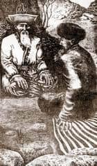

Sooronduk, misafirlerden oğluna ad vermelerini rica etti. Onlar, komutanın oğluna verdiğimiz ad, belki yakışmayabilir diye suskun durdular. Bir derviş gelip: “Oğlunun adını Almambet koy” dedi. Almambet küçüklüğünden kabiliyetli çıktı. Gün geçtikçe büyüdü. Büyüklerin bilmediği şeyleri öğrenmeye, esrarlı dünyayı tanımaya, zayıfken güçlüleri nüfuzu altına almaya, çirkinden güzelliği bulmaya yeltendi.
Sooronduk, onu ileri gelenlerin çocuklarıyla birlikte dört yıl hocaya verdi. Almambet iki yıl Celpinis’teki yetmiş katlı mağarada yatan ejderhadan yay kullanmayı, taktiği, harp ilmini okudu. Ejderde okumak için altı bin çocuk gelmişti, altı çocuk eğitimini tamamlayabildi. Alimlerden gök ile yeri, karanlık ile aydınlığı, akıl ile kabiliyeti, korkunç dünyanın değerini öğrendi. Bilimde derinleştikçe çınar ağacı gibi yayıldı, sağlam oldu.
Almambet beyliğe oturdu. Hanlar, elçiler savaşçılar hediyelerle geldiler. Almambet, söz ile gelen misafirlerin gönlünü alıp, akıllıca, ustalıkla yolcu etti. Onun ünü yayıldı. Hanlıklardan kaçanlar tarafsız Almambet’in himayesine sığındı. Almambet’in sevilmesi bazı hanları sevindirmedi. Onu Esenhan’a şikayet ettiler.
Padişahlar, komutanlar da Almambet’i davet ederek şerefine ziyafet verdiler. Almambet Çin’in ordu komutanı olarak askeri birlikleri, onların koşullarını denetledi. Çin padişahı Esen Han, Almambet’i Pekin’e çağırdı. Han sarayının kapısında Esen Han’ın askerleri Almambet’i alıp götürdüler. Esen Han’ın yanındaki beyler, rahipler komutana saygı gösterdiler. Ejderha işlenmiş kaftan giyen, Almambet’i çağırdılar.
Hanın fermanı okundu. Almambet’e ferman kağıdı verildi. Ona kaftan giydirilip, kuşak kuşatıldı. Çin’in kırk padişahının biri olan Azizhan, Sooronduk’un kayınbiraderi idi. Almambet Azizhan’ın karargahında hüner öğrendi. “Göğün oğlu komutan Almambet’in şerefine insan kurban edilirse kutsal kitaba göre Göğe karşı günaha gireceğim. Uğursuzluk gelecektir. İyisi mi bu köleleri elime verin” dedi Almambet Esen Han’a.
Esen Han Almambet’in kurban edilecek olan köleleri ona verdi. Han sarayındaki tutuk beyleri, askeri komutanlar, şehrin büyükleri, ulema ve rahipler Almambet’in davranışını beğenmediler. Esen Han, Almambet’e dinlenmesi ve askerini sayması için altı gün izin verdi.
Esen Han fark ettirmeden Almambet’e dikkatlice baktı. Almambet kargaşa ve karışıklıklara dayanabilecek karakterde, tuttuğunu koparan, insandan canını alan alp idi. Altı gün içinde Almambet’i çekemeyen beyler, vezirleri kışkırtıp onu Esen Han’a şikayet ettiler. Niyeti bozuğun ta kendisidir. Bu gözünden de okunuyor. Ona zehir verip biran önce ortadan kaldıralım” dedi basiretli kişiler. Almambet Çin’in ordu komutanı olup altmış günde Tangşa şehrine, kendi sarayına ulaştı.
Sooranduk oğlu Almambet’e yakındı : Almambet Kongurbay’a gitti. Kangay’a tanılan Kongurbay altı bin askerle bin beyi idare ediyor, pamuk bel bağı kuşanmış geniş çizme giymiş gururla yürüyordu.
“Kongurbay, sözümü dinle. Babacığım Kan-Caylak’ını kendine geri ver. Büyüklük edeyim deme” dedi Almambet.
Bunu işiten Almambet mızrağını uzatıp haykırarak Kongurbay’a hücum etti. Onun ejder gibi heybetinden korkan Kongurbay, kaçtı. Almambet yetişip Kongurbay’a vurdu. Kongurbay’ın hızlı koşan bir at idi. Almambet ona ulaşamadı. Esen Han hükmü imzalayıp, adamlarıyla Sooronduk’a gönderdi.
Han sarayına Almambet iki gün geç geldi. Esen Han Almambet’i kabul etmedi. Bu hanın gazabına uğrayanlar için uygulanan kaide idi. Han Esen Han kabul eder umuduyla Almambet karargahın kapısında yedi gün bekledi. Almambet’e gönlü yakın Burulça kız, Almambet’e gizlice sır verdi.
Almambet Tangşa’ya, babasının karargahına döndü. Sooranduk şimdi Tanrı’ya karşı değişmişti. Oğlunu gördüğünde ayı gibi bağırıp Almambet’e atıldı. “Öyle kötü konuşma! Ulu Göğün oğlunun karşısında beni utandırdın”.
Almambet, Kendi Yurdundan Kaçıyor
Almambet uyumadan düşündü, sonunda bir karar vardı. Burada kalıp ne yapayım? Çin bana göre değil, Kırgızlara gideyim”. Düşüncesini annesi Ekzer’e söylemek istedi. Canı sıkılan, içindeki acıyı kimseye söylemeden ıstırap çeken Almambet ava çıkarsam rahatlarım diye Aral denen yere vardı. Etekleri ormanlık olan Aral dağına yerleşip av avladı. Almambet, ormanın kenarı boyunca kaçan karacayı canlı yakalayacağım diye takip eder. Karaca ormana girip açık alana çıkar. Almambet karşısında atlı adamları görür. Demin kaçan karaca atlı kırk adamın yanına doğru gelip silkinerek adam kılığına girer.
Almambet ejderden iki yıl büyücülük okumuş idiyse de böyle kerameti ne işitmiş ne görmüştü. Almambet’in ağzı açık kaldı. “Siz kimlersiniz, kahramanlar? Nereden çıkan ruhlarsınız?” dedi Almambet.
Almambet geri dönerken etrafı daha güzel göründü. Doğanın bu güzelliğini önce fark etmediği için eseflendi. Doğanın bu güzelliği karşısında Almambet’in vücudu gevşedi, şarkı söylemek istedi. Göklere yükselen dağlar üzerinden, kuş gibi uçmak, bulutlar gibi yayılmak istedi. Almambet doğayı seyrederken insan karaltısı fark etti.
Almambet avcılara yol sorayım diye onlara doğru hareket etti. O evvel atlı, elinde iyi kapan kuş tutan, silahlı, geniş göğüslü, kabusundan ata binen adama vardı. Almambet görmemezlikten gelip kımıldamayan adama “kaoma” diye selam verdi. Adamdan ses çıkmadı. Almambet atlıya tekrar selam verdi. Adam in mi, cin mi olduğunu söylemedi. Almambet sinirlenerek bulut gibi bozulup, arslan gibi atılarak adamın üzerine yürüdü.
Almambet de atından indi. Onlar ,kımızdan yapılmış şarabı içip uzun uzun konuştular. Savaşçı Almambet Esen Han ve Kongurbay’la olan ihtilafını, memnuniyetsizliğini Er Kökçö’den saklamadan anlattı. “Günahkar gibi saklanarak kaçmayacağım! Baba anneme söyleyeceğim! İzin verirse benimle gelecekleri can yoldaş edinip götüreceğim! Tesadüfen söylediğim ayda gelemezsem, bizim dine girdi diye, bizden biri diye gereğini yap” dedi Almambet. Almambet’in sözüne Kökçö inandı.
İki kahraman kılıçlarıyla ellerinden kan çıkarıp, kılıcın tığına kan sürüp göğüslerini değdirerek vedalaştı. Almambet Tangşa’ya geldi. Sooronduk’un sarayı karışmıştı. Sooronduk, Almambet’i koruyan askerleri suçlayıp zindana atmıştı.
Almambet gelir gelmez Türklere gönül verdiğini, onlara gideceğini annesi Ekzer’e anlattı. Ekzer, oğlunun sözü üzerine ç dövündü. Almambet annem beni bırakmayacak, babam anlayış gösterip kahramanca davranabilir diye Sooronduk’a vardı. Babasının etrafında büyükler oturuyorlardı. Toplananlar Almambet’e saygı gösterdi. Çin sınırındaki bütün hanlara haber gönderip seni bulamadık.” Almambet hemen kılıcı alıp, üzerine gelenleri gebertip karargahtan çıkarak direğe bağlanan atına bindi.
Öfkelenen babası sarayı sarsacak kadar bağırıp çağırdı. “Yakalayın! Öldürün! Gebertin!” diye bağıran Sooronduk’un sesi şehirde yankılandı. Almambet sağa sola bakmadan yola koyuldu. Sooronduk oğlunun peşinden asker gönderdi. Esen Han ve Batıdaki hanlara mektup yazıp, güvercinlerle gönderdi.
Sarayına bir güvercin mektup bıraktı diye Esen Han’a küçücük bir kağıdı verdiler. Kağıtta şöyle yazılıydı: Bugün sabaha karşı Sooronduk’un oğlu Almambet Kırgızlara kaçtı. Batı yönüne doğru gidiyor. Esen Han öfkelenip haykırışlarla bağırdı. Yakasız zırh gömleği, giyen, memur Kongurbay ile Savaşçı Neskara’yı ve Büyük Yoloy’u kalabalık askerle takibe gönderdi Esen Han. Kongurbay’ın askerleri Almambet’e beş günde vardılar.
Kalabalık asker Almambet’i uzaktan kuşattılar. Kuvvetten düşen Almambet gelen askerlere tek başına karşı koydu. Savaşçı bekleyen Kongurbay’a oktan önce ulaşıp böbreğini yumruklayarak geçti. Kongurbay atından düşmek üzereyken arkadaşları onu kurtardılar.
Almambet savaşçılığını gösterdi; kalabalık içine girip kılıcıyla mızrağıyla nicesinin canına okudu, kellelerini kopardı, askerleri atmaca gibi kovaladı. Almambet uyumadan yedi gün yedi gece savaştı. O karşısına çıkan Çin hanı Neskara, Kalmuk hanı Coloy ve onların yanındaki pehlivanlar ile dövüşüp çoğunu saf dışı etti. Kalabalık orduyu alt üst etti.
Bir anda atı halsizlenip bir çukura düştü. Almambet eyerinden bir yana sarktı, üzengiden ayağı kaydı. Alevke’nin oğlu Kongurbay atını kamçılayıp saldırıya geçti. Almambet hayatından umudunu kesmişti. Almambet’e Gök yardım etti. Kızıl perçemli mızrağı olan biri doğruca Kongurbay’a saldırıp, atına mızrağını sapladı. Kongurbay’ın atı kuvvetten düştü, Kongurbay hayatından umudunu kesip telaşla aşağıya doğru kaçtı.
Almambet “Bana yardım eden hangi kahraman acaba?” diye dikkatle baktı ki annesi Ekzer’i gördü. Anne doru kısrağa binip, erkek kıyafeti giyinmişti, Oğluna yardım etmek için, eline mızrak alarak oğlunun peşinden gelmişti. Yerinden kımıldamayan arslan, sevincinden kabına sığmıyordu, annesine acıyordu. Almambet daha da cesaretlendi. Soğuksuyu geçip, atına binerek Kongurbay’ı takip etti. Kongurbay’ın kara atına Almambet yetişemedi. Kaçanların arkasından kovalayan Almambet yakaladığını öldürdü.
Almambet kaçanların arasında kuşluk vaktindeki askeri görünce, önce onu öldürmek için mızrak vurdu. Üzengiden kayan asker başını çevirdi. O, Almambet’in babası Sooronduk idi. Onu gören Almambet’in vücudu deprem olmuş gibi sarsıldı.
“Sen miydin baba, sağ kal!” dedi. Atının boynuna asılıp, ocağına su basmış gibi elinden kuşunu uçurmuş gibi atını geri çekti.
Almambet yürürken çukurda doru kısrağın boş olduğunu gördü. Almambet’in dağ gibi atı sallandı. O uçarcasına, kısrağı yedeğe alarak “Asil Ekzer anneciğim.” diye bağırmaya başladı. Annesinden ses çıkmadı. Kalabalık Çinli’nin Ekzer’in cesedini katıra yükleyip, Pekin’e doğru götürmekte olduklarını gördü Almambet. Yetişip annesinin cesedini kurtardı. Almambet mızrağını yere vurup, gözlerinden yaş dökerek, kemikleri sızlayıp üzüntüden halsizlendi.
Düşman, Almambet’i dört tarafından kuşatmış, geliyordu. Almambet atını gerip çekip annesinin cesedini belinden tutarak doğru kısrağa yükledi. Ormana girdi. Annesinin cesedini büyük bir acı içinde toprağa verdi, üzerine büyük bir taşla işaret koydu. Şafak söküp yeryüzü aydınlandı. Almambet gitmek istedi ama düzlüğü düşman örtmüştü. Almambet, dindar biri idi, bir fırsatını bulup bu sıcakta dağ deresine dolu yağdırdı, ormana sel bastırdı, düzlüğü kara dumanla örttürdü. Kılceyren’e binen Almambet yağmurdan kaçan askerler arasında atlarını beraberinde sürerek ormandan çıkıp Altay’ın yolunu tuttu. Tam on bir gün yol yürüdü.
Kökçö ile vaatleştiği günün üzerinden altmış gün geçmişken yoldaşlarıyla atlanan Kökçö “Almambet verdiği sözü tutacak, dost için ateşe girecek savaşçı sözünden dönmez, vaatleştiğimiz yere gelmişti” diye nehrin kıyısını takip etti. Öğlen olduğunda toz duman çıktı. Kökçö bakınca gelenin Almambet olduğunu gördü. Güz aylarının sonunda Er Kökçö Almambet’i babası Aydarkan’ın avuluna götürdü.
Almambet Kökçö’nun karargahında barınıp, dokuz yıl bekar yaşadı. O halkın sefil yaşamına acıyıp, bir yararım dokunsun diye, Moğolların, Tırgotların, Kalmukların sığırlarını ve develerini getirerek yoksullara paylaştırdı. Yılda üç dört kez at getirip yoksulu zengin kıldı.

Manas döneminde Aksakallılar.
Almambet Kazaklara Sığınıyor
Almambet ‘diliği, dürüstlüğü, obacakta değer kazanmaya başladı. Fakirler, şikayetçiler, baylara ileri gelenlere, efendilere, beylere değil, Çinli Almambet’e gelmeye başladılar. Almambet herkesin derdini dinliyordu. Kimsenin zenginliğine, şöhretine bakmıyordu. Herkesle konuşup, davanın köküne iniyor, adil bir şekilde çözüyordu.
Kazakların, adillik taslayan bilgiçleri, hakimleri ganimetten mahrum kaldılar. Bir defasında altmış kişi bir araya gelip anlaştılar. Hile düşünüp, Almambet’e denk gelemeyeceğine kanaat getirdiler. Kökçö ile Almambet’in arasını açtılar.
Babasını, askerlerini öldüren bu Çinli sana acır mı, Almambet seni öldürüp tahtına oturup Ak-Erkeç’’ almak istiyor, onu ortadan kaldır” diye hep birlikte bir masal uydurup Kökçö’yü sarhoş ederek Almambet’e karşı çıktılar. Kadınlara düşkün, Kökçö, mümtaz beylerin dedikodusuna inanarak Almambet’i kalabalığa öldürtmek isterken, o kılıcını çıkarıp kendini korudu, bir kaçını yıkıp ölümden kurtuldu.
Öfkelenen Almambet’e beyaz sarıklıların akıllısı, şöyle akıl verdi: “Yolda Kırgızların savaşçıyı Manas’a uğra, senin kıymetini bilse bilse o bilir, sözümü unutma.”
Almambet epey yürüdükten sonra “Kökçö sarhoşluğundan bana bunu yaptı, kendine gelip gerçeği öğrenirse peşimden adam gönderir” diye pek uzağa gitmeden, yollara bakıp bir gün yattı, iki gün yattı, üç gün yattı. “Kökçö değişmiş, niyeti bozulmuş” diye dertlenip ondan umudunu kesen Almambet atının başını sahraya çevirdi.
Hazret dağında. Ahşap dairesi ardıç ağacıyla tutturulmuş, Karabörk’ün, adetlere göre yapılan beyaz çadırında uyumakta olan Er Manas rüya görüyordu.
Manas uyanıp “gece gördüğüm rüya iyi değil. Bunu halka anlatıp yordurayım” diye Kırgızlara haber gönderdi. Kırk gün sonra haber ulaşan yerlerin hepsinden halk geldi. Ya düşmanını yenememiş, ya da hanımı erkek doğuramamış, durup dururken ziyafet vermesinin anlamı nedir? Diye şaşıranlar oldu.
Manas eğlence düzenleyerek ziyafet verdi. Karargahına aksakallıları, bilgiçleri, halkı yöneten beyleri, çağırıp rüyasını anlattı. Yaz geçti, güz geçti. Manas’ın karargahında altı yıldan beri kötülükten haber veren davul çalınmamıştı. Bugün davul çalındı. Manas’ın kahramanları atlarını esirgeyip, bindikleri toburçak koşu atlarına bindiler, atlanıp düşman yerine av, gece yerine tan arayıp çıktılar. Manas doyasıya eğlendi, pek çok geyik avlattı. Doğuya doğru yürüye yürüye on beş gün yol gittiler.
Manas yüksek dağlarla çevrili, at ayağı değmemiş otlara, Talas’a merak salıp, buraları tam karargah kurulacak yer imiş diye çok beğendi. Ceylanı fazla olan geniş havzaya karargah kurup satranç, aşık oynatıp altı gün eğlendi. Kahramanların hepsi eğlenirken Manas rahat uyuyamadı, gönlü eminlik bulmadı, bir gök çadıra giriyor, bir dağa çıkıyordu, kalbi çarpıp, yer bakmaya giden kahramanlarını gözetliyordu.
Dağ eteğine çıkan yolda bir karaltı gözüktü. Bindiği at, değişik bir tulpar idi, kendisi geniş göğüslü, öküz beli gibi dağa benzer bir alp idi. O başına hanlarınki gibi altın işlemeli kalpak giyen, insandan farklı heybeti olan, ölümden çekinmeyen, savaşçılık boynuzuna sahip bir kahraman idi.
Manas , “Sevgili Er Almambet işte odur” diye tahmin etti. Dosta susamış gibi aceleyle yanına gitmekten çekindi. Onun gerçek kahramanlığını deneyeyim, kurallara göre iş göreyim, halkın adetini göstereyim diye Almambet’e görünmeden dereye girdi. Manas, arkadaşlarını yerinde bırakıp su kıyısındaki altın sadaklı beş savaşçısına Almambet’i gördüğünü söyledi. “Belindeki bağ gibi beş savaşçı, sözümü dinleyin. Aşağıdan gelen Almambet’e benziyor. Onu kuşatıp fark ettirmeden yaygara edip ona saldırın, savaşçılığı o zaman bilinir. Yiğidin yüreğini deneyelim” dedi.
Beş savaşçı dağ deresini takip ederek yola koyuldular. Savaşçılar aniden tüfek atıp, davul çalarak, Almambet’e saldırdı. Almambet bu haykırışına değer vermedi, gerçekten kurşun yürekli, fil bilekli savaşçı idi. Arkasına bakmadı bile. Yöneldiği taraftan sapmadan mızrağı belinde sallanıp, bastırıp gelmesin mi? Bağırıp çağıran, beş delikanlı Almambet’in heybetinden çekindiler, dilleri tutulup, sustular. Silahlarını indirdiler, alaya kaldılar, selam verdikten sonra sıraya girip durdular. Savaşçılık taslayan Sırgak Almambet’e yol başlıyordu. Almambet çadıra yaklaşırken karşısına akıllı Acıbay çıkıp atının dizginini tutarak konuşmaya başladı.
“Büyük olsan da alçak gönüllü ol savaşçı, sözüme kulak ver. Tanrının emriyle Kırgızların mukaddes topraklarına, hanın kapısına rastladın. Halkımızın adetlerine göre davran. Hanımız bizi cezalandırmasın, canımız sağ kalsın. Attan inde hürmetle hana selam er...”
Hakan Çin’de hanın Adetleri öğrenmiş, Türk hanlarının köşkünde bulunmuş Almambet atından inip, han çadırına gelip, selam verdi Manas’ın amcası Bakay’la el sıkıştı. Kırgızlar, adetlerine göre kımız alıp geldiler. Almambet fincanı veren yiğide “evvel büyüklere sun” diye Bakay’ı gösterdi. Bizim adetlerimizi biliyormuş diye oturanlar şaşırdılar.
Bakay kaseye dudağını bandırıp büyüklük işaretini yaptı. Almambet fincanı eline aldı. Almambet açlığını göstermemek için azıcık içmişti, kımız midesini yakmış olmalıdır ki, kamburlaşıp ter içinde kaldı, sonra başını kaldırdı.
Almambet kederlenerek şöyle dedi:
Adını sanımı sorma savaşçı, Halkından vazgeçen bir yalnızım. Gözüme alıp ölümü, Cevap verecek halim yok? Şaşkın dolaşan insan gibi, Yol sorsam ne fayda eder? Böbürlenecek halim yok? Budala dolaşır her yerde, Yalnız gezen bir kimseye Halkını sormak ne fayda eder? Gideceğim bir yer yok, Şöyle dolaşan biriyim. Sığınacak halkım yok, Şaşkın gezen biriyim. Hayalde yok iş arayıp, Şaşalayan biriyim. At ulaşmaz yol arayıp, Yol şaşıran biriyim.
Almambet, Manas’a Sığınıyor
Manas’ın ordusundaki kahramanlar koşuşup, hakim beyler telaştan şaşırdılar. Manas sözünü bitirir bitirmez, kahramanlar Ak-kula’yı yedeğe alarak, dokuz ünlü koşu atını getirdiler. Atların hepsi eyerlenmişti. Ak-Kula’daki altın eyerin başına balta bağlanmıştı.
Kırgızlar Almambet şerefine kurban kestiler. Manas hazineci yiğide büyük heybeyi açtırdı. Almambet’in başın para serpti. Yuvarlak başlı insanların talihi için kahramanlarına talan ettirdi. Yağları Almambet’in başından çevirip, köpeklere yalattı. Üç canlının etini Almambet’in başında çevirip, kuşlara yedirdi. Almambet’in eski giysilerini gariplere pay etti.
Yürük atların önü geldi. Birinci yarışı toynaklarının bırakan Almambet’in Sarala atı kazındı. Birinci yarışın mükafatı Almambet’e verildi, onlar sahiplerinin hizmetine girdiler. Savaşçı yedi kahraman Almambet’in emrine geçti. Manas yeni dostuna değer verip onu iki gün kırda dinlendirdi.
Kahramana yandaş yatan, kuşlar ile bir arada uyuyan Almambet ile Manas; iki kahraman rahatladılar. İki gün iki gece yattıktan sonra kalbindeki sözleri birbirlerine anlatıp dost oldular. Keçe evinin önündeki kahramanlardan üçü ‘Almambet oğlun geldi’ diye Cakıp Bay’a müjde vermek için koştular. Cakıp Bay Manas ile Almambet’e herkesten önce ulaştı.
Almambet, babasını hatırlamış Bay’dan memnun olmuş gibi Cakıp’ın göğsünü öptü ve ağladı. Bu sırada, arkadan Çıyırdı hanımın sesi geldi. Hanım altmış ihtiyarın arasından geçerek geldi. “Tanrım bana verdi. Biriciğim çifti geldi.” Çıyırdı Almambet’e sarılmıştı. Hanımın memelerinden gelininki gibi süt fışkırıp aktı. Şöhretli hanım Çıyırdı iki memesini çıkarıp sağ yanına Manas’ı, sol yanına Almambet’i alarak ikizleri emzirir gibi emzirdi.
Cakıp Almambet’in gelmesi münasebetiyle kırk bir hayvanı gariplere ve fakirlere sadaka verdi. Manas Almambet’i kutlamak için sekiz kabile halkına ziyafet verdi. Çıyırdı hanımın beyaz evinde, sofrayı çevreleyip oturanlar arasındaki Almambet şöyle dedi:
“Savaşçı Manas, halkını gördüm, Tanrı bahtını vermiş. Ak-kula atını mertlik edip bana verdiğin için memnunum. Ak-kula’yı sana verdim. Bana Sarala yeter.” Almambet’in akıllılığını gören Kırgızlar çok sevindiler. Kalabalık halkın ortasında Manas, yanında Almambet ve kabile reisleri yer almıştı. İki kahraman beyaz söğüt çubuğunun uçlarından tutup durdular. Cakıp çelik bıçakla çubuğu tam ortasından kesti.
Ata Yurduna Dönüş 2
Anlaşma sona erip halk dağıldıktan sonra herkes kendi evine giderken Almambet Ak Otağa yalnız gitti. Bunu gören Manas Almambet’e kız bulmayı düşündü. Manas sonunda Almambet’e kız bulmadan önce evvel kendisinin evlenmesi gerektiğini düşündü. Manas babası Cakıp’ın sırrını söyledi: Manas gönlündeki sırrı şaka yoluyla Cakıp’a anlattı.
“Baba, dostum Almambet’e de kız ara. Beraber evlenip, beraber düğün yapalım” Almambet’in nasıl bir kız istediğini bilmiyorum? Dedi Cakıp savaşçıya gülerek.
Almambet yere baktı. “Baba” dedi Manas. “Bana layık bulduğun kızdan üstün olursa olsun, eksik olmasın!” Bunu işiten Cakıp Bay yanına yoldaş alıp, Manas ile Almambet’e kız aramak için yola koyuldu. Cakıp Bay iki oğlumu evlendirip babalık farzımı yerine getireyim, uzaklara gidip kız aramalı demesinler diye Çarcuy ve Fergana’dan başlayıp Semerkant, Taşkent, Buhara’ya kadar dolaşıp kız aradı. Sonunda Tacik yurduna geçerek otuz şehrin hanı Atemir’in Sanirabiyga denen kızını beğenip döndü.
Cakıp, halkına geldi, onlara haber verdi. Manas Büyük Tepe’ye avlanmaya gitmişti, ona haber verdiler. Halk toplandıktan sonra Cakıp acele etmeden başından geçenleri anlatmaya başladı. Kenarları kırık olan bir ayı tutup yatmışım. Almambet de böyle bir rüya görmüş. Bakay amcaya yordurduk: “Eline gelen ay aldığın yardır, kenarlarının kırık olması çocuk doğurmayacağına işarettir. Sonra dolgunlaşması da eşinin gecikip doğurmasını bildirir” diye yordu. Kökötöy at vereceğini, Alımbek inek vereceğini, Oşpur koyun vereceğini bildirdiler.
Ak otağda taş koymak suretiyle saydılar, on iki taifa Kırgızdan altı yüz on dört kişi vardı, hiç biri boş kalmadan Manas ile Almambet’e yapacağı yardımı bildirdi, sonunda Atemir’in söylediğinden üç kat fazla hayvan bulundu.
Kırgızlar, şarkı söyleyerek Atemir hanın şehrine Kanıkey’i almak için yola koyuldular. Damat olacak Manas on iki bin seçkin savaşçıyı yanına aldı. Dünür evine doğru yola koyulan kalabalığa göz ulaşmıyordu. Deveci Dörbön önünde üç yüz deve sürdü, atçı Salamar üç bin atı sürdü, inekçi Deldeş dokuz yüz ineği idare etti, koyuncu Kongurat otuz bin koyunu sürdü. Hüda göstermesin ki, göğe yükselen tozdan ve dumandan yol gözükmüyordu, gökte yıldızlar görünmüyordu.On üç gün yürüyüp, on iki kapılı keyip-Badan şehrine ulaştılar. Atemir hanın kahramanları hana “Şehire düşman geldi.” diye haber verdiler. Şehir halkı korkup askerleri telaşlanırken Manas’ın çoraları geldiler.
Düğün umuduyla gelen halkı adet gereği de saygı selamla karşılamadı ya da gelen hayvanları tutup almadı, altmış bir Keyipli şaşakaldı. Atemir han aklını başına topladı, şarkıcılardan şarkısını dinleyip, dünürü olan Kırgızların aklı selim ihtiyarlarını davet edip ağırlayarak örf ve adetlere göre hürmet gösterdi.